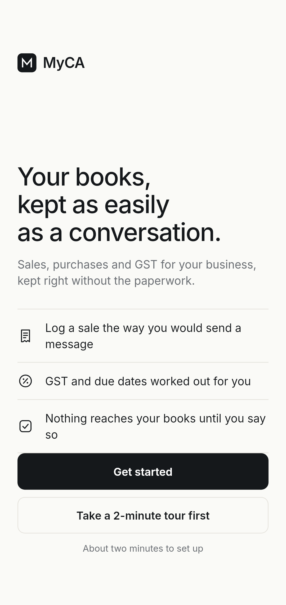
01 — Welcome
First-run promise screen: “Your books, without the bookkeeping.” Messenger metaphor up front — sales, bills and expenses with the taxes handled. Single CTA “Get started”.
- What it proves: brand, positioning, no login wall on first run.
- Next: “Where are your books?” migration picker.
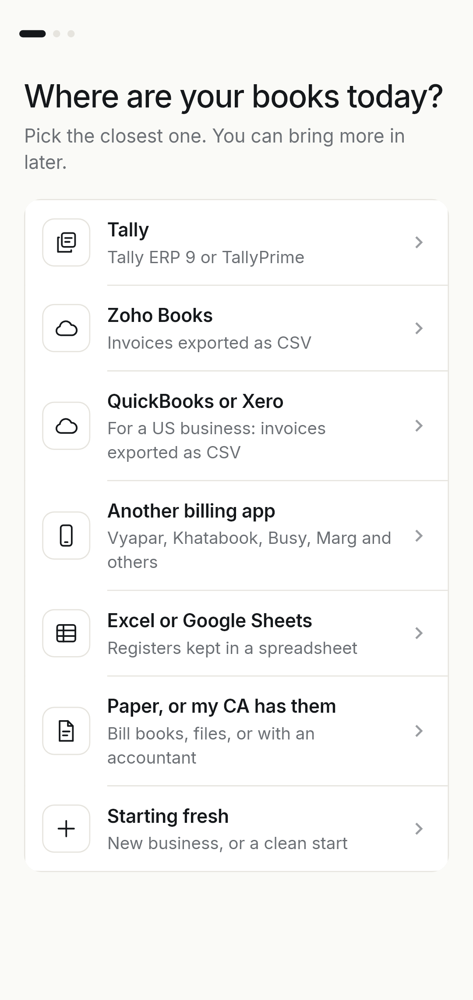
02 — Where are your books?
The migration fork. Tally, Zoho Books, another billing app, Excel/Sheets, paper or CA, or starting fresh. Each path offers only the imports the server can actually parse (Day Book CSV, TallyPrime XML, bank statement, invoice CSV). Direct Vyapari/Khatabook/Busy/Marg import is explicitly not built.
- Why it matters: sets expectations before any file is picked.
- Files upload first and imports refer to them by hash — contents never sit in a pending preview.
03 — Business
Minimal business capture: name, phone, GSTIN with “Look up” validation. Skips straight to “Continue”. Country branching happens here later (IN vs US tax tracks).

04 — Bring your books across
Concrete next step for the Tally path: Day Book CSV, TallyPrime XML, bank statement. Copy is honest — sheet keeps only sale, purchase and expense rows; payroll comes later. Skip option preserves the fresh-start path.

05 — Home
The operating dashboard: greeting plus business name, Ask bar (“Tell or ask MyCA anything”), Taxes-and-filings panel (“3 things need you”), “Books today · 2 need you”, week ahead, due-today reminders, month summary (Sold / Bought / Spent with prior-period compare, owed to you / you owe), then “Your books” registers and “Money and follow-up” (Cash, Marketplace, Reports, Your CA, Reminders, Books check).
- Data: daily_close, week_ahead, today, business summary — all server-computed.
- FAB: “New entry” is the primary creation path.
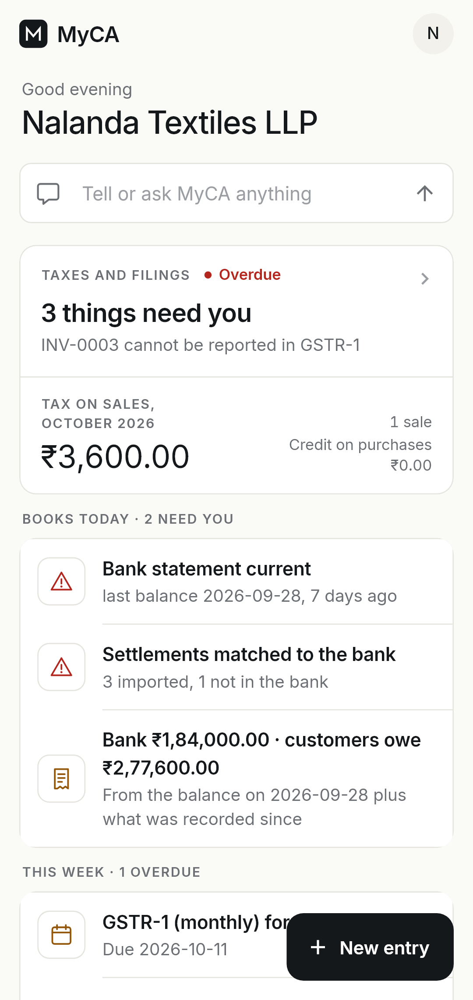
05c — Home on the first day
Same shell with empty books: “Log your first sale” card, “You are all caught up” taxes panel, zeroed month figures. Prevents the cold-start stall.
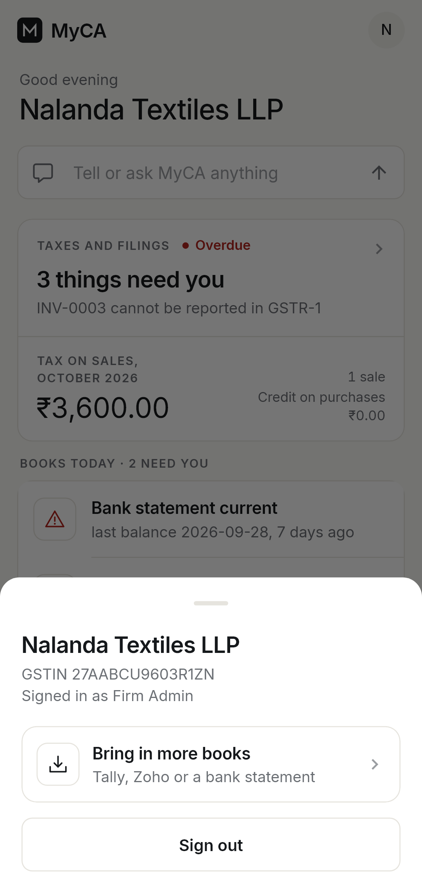
05b — Business menu
Bottom sheet for identity and mode switching: business name, “This business deducts TDS”, hosted/local toggle (“Use this phone with the hosted service” vs “Use with MyCA on your computer”), business switcher, people and invitations, connections to banks and apps, lock control, sign-out. Lock toggle lives behind the app lock.
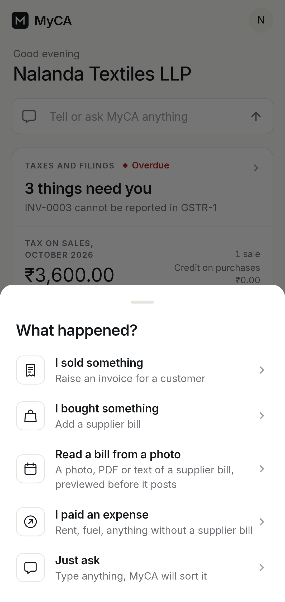
06 — New entry
Five-way capture: sold something, bought something, paid for an expense, “bill to pay later…”, “ask or tell MyCA”. One thumb reach from the FAB; routes to party picker or Ask.
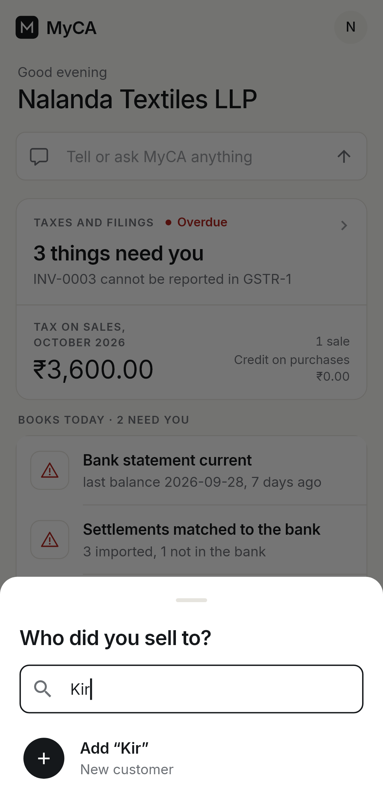
07 — Who did you sell to?
Customer search with recency-ranked threads (“Gujarat Weaves · owes ₹3.3L · Oct 2026”). Typing filters; “New customer …” creates inline. Same pattern reused for suppliers.
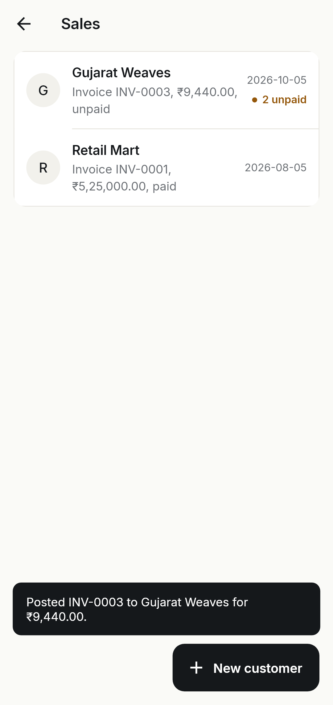
08 — Sales register
All sales in one thread list: customer name, invoice id, amount, status chip (Paid / To receive with due-in days / Overdue), search and GST filter. Entry point to party threads and quotes.
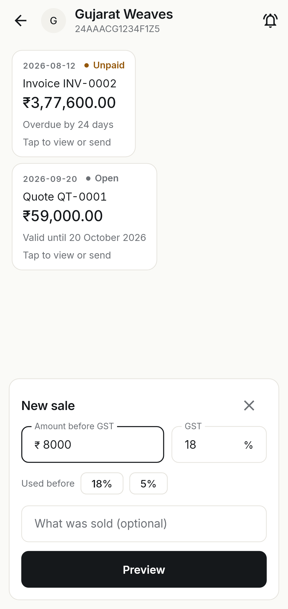
09 — New sale
Structured args for /api/propose: date, amount before GST, rate chips (0/5/12/18/28%), place-of-supply note, HSN hint (“Check with your CA before filing”). Preview CTA computes the engine preview; nothing posts here.
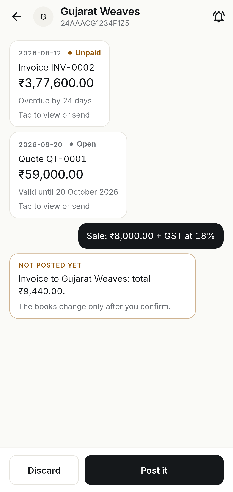
10 — Not posted yet
The thin-client contract made visible: dark summary bubble plus gold “NOT POSTED YET” card with the exact proposed entry (“Sale of ₹8,000 to Kir … dated 28 Oct 2026”). Books change only after “Post it”; “Discard” drops the one-use token.
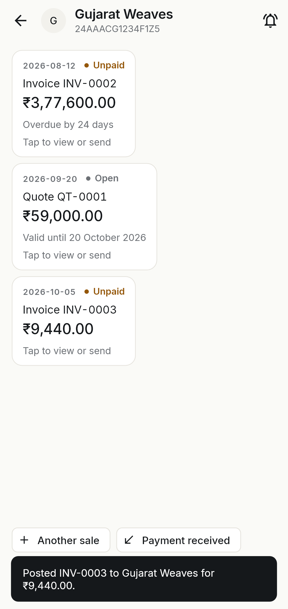
11 — Posted
Success state of the same sheet: “Posted” confirmation card, invoice id assigned (INV-0010), totals restated. Party thread and registers refresh from the server snapshot.
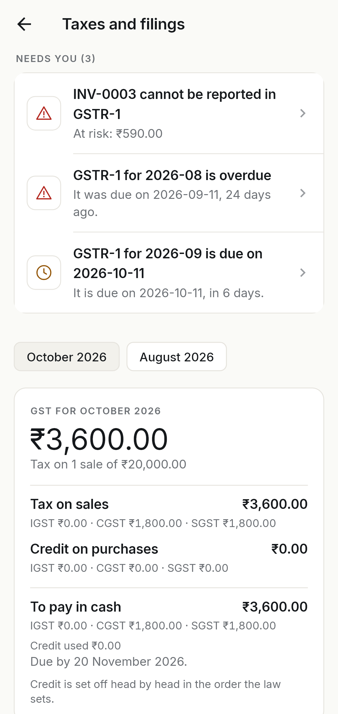
12 — Taxes and filings
Return hub: GSTR-2B import banner, “Review the return” primary action, GST payment, CA pack exports (filing pack, trial balance, TDS, Tally file, year close), TDS section, FILED section for portal-recorded filings. Review is step-gated; filing itself stays on the portal or with the CA.
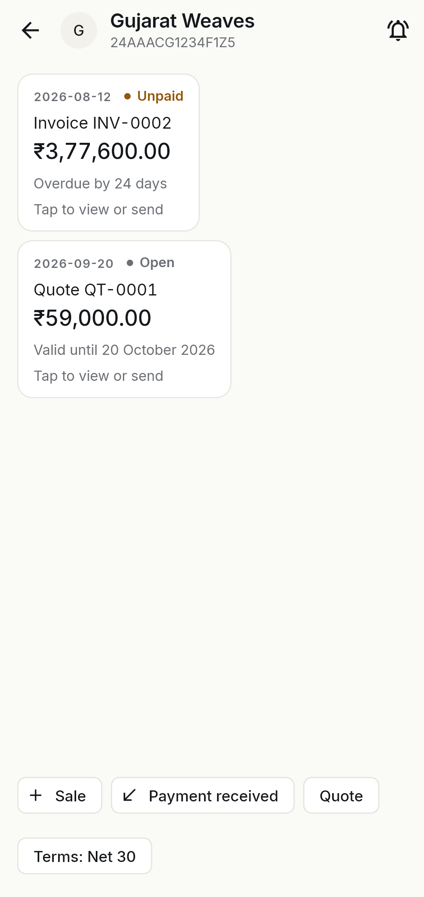
13 — Customer thread
One customer, one thread: balance owed, quote (QT-0001), invoices (INV-0002). Each entry shows state (To receive, 10 days left). The messenger metaphor lands here — scroll the relationship, tap any entry for detail.
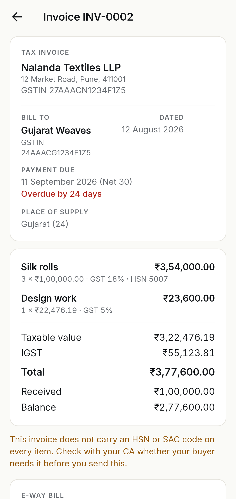
14 — Invoice detail
Full invoice view: balance, HSN/SAC warning, e-way bill card when interstate value crosses ₹50,000, share via the owner’s own WhatsApp/email (MyCA sends nothing itself), PDF print/save, and corrective actions — Remind me, Ask CA, Credit note, Debit note, Cancel. Corrections are new entries; the invoice is never edited in place.

15 — Expenses
Heads (Rent, Fuel, Other) with month spend and bill counts, plus a “New expense” FAB. Routes to the head picker then the expense form.
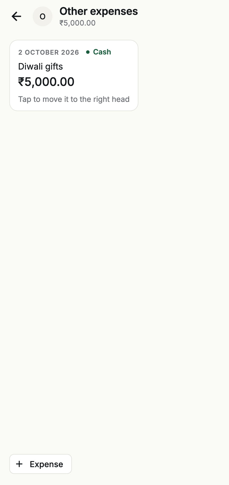
16 — Expense head
Small but important choice: Expense vs Asset changes posting. Head chips (Rent/Fuel/Other) carry the description hint forward.
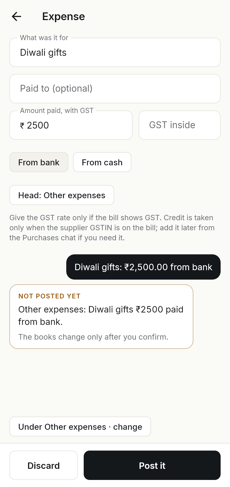
17 — Expense preview
Same propose/confirm contract as sales: dark “Expense of ₹2,500 … cash” bubble, gold NOT POSTED YET card (“paid 2,500 for Diwali gifts on 28 Oct 2026”), Discard / Post it. Cash vs bank mode is explicit at entry.
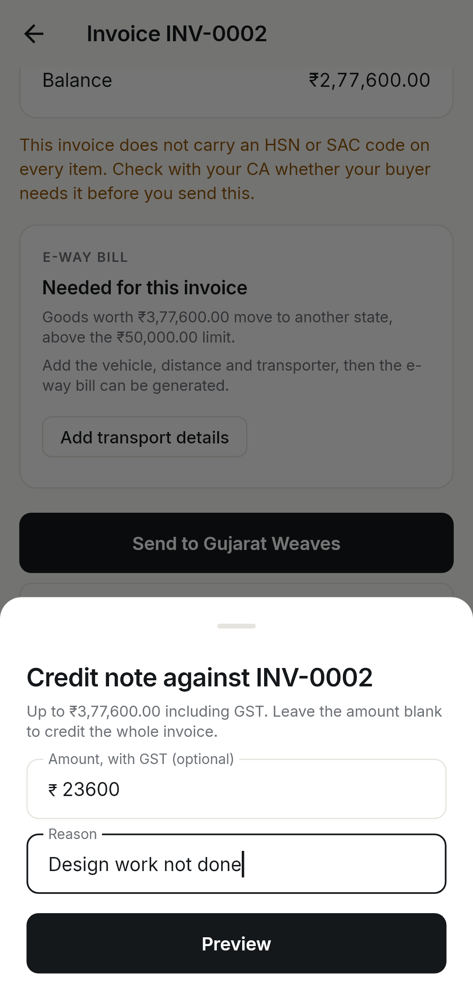
18 — Credit note entry
Bottom-sheet correction against INV-0002: optional partial amount (blank = whole invoice), mandatory reason. Up-to cap shown including GST.
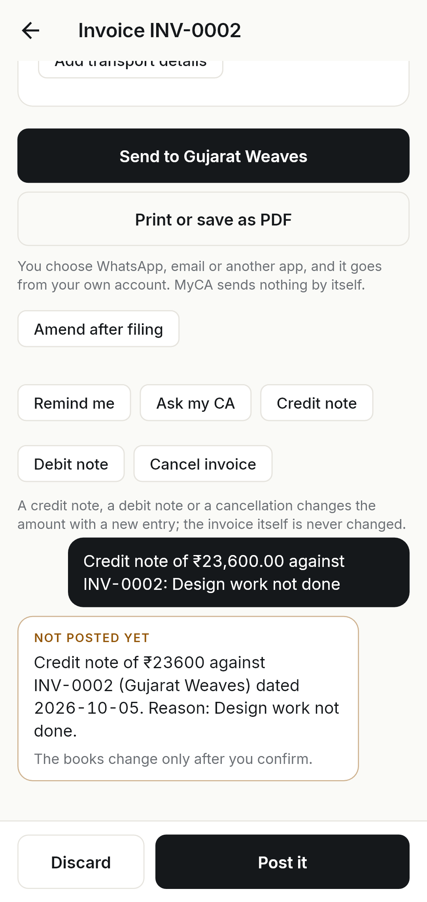
19 — Credit note preview
Correction preview with the same guarantees: “Credit note of ₹23,600 against INV-0002 … Reason: Design work not done”, not posted until confirmed. Preserves the append-only ledger — new entry, never an edit.
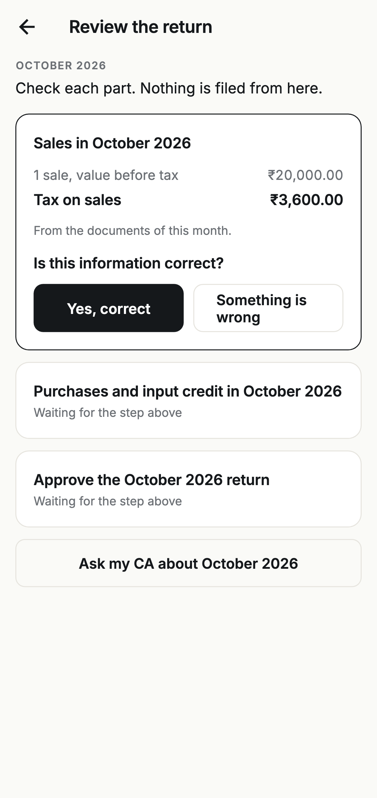
20 — Review the return (sales)
Maker-checker review, step by step: sales value and tax from this month’s documents, “Is this information correct?” with Yes / Something-is-wrong. Purchases and approval wait on this step. Nothing is filed from here.
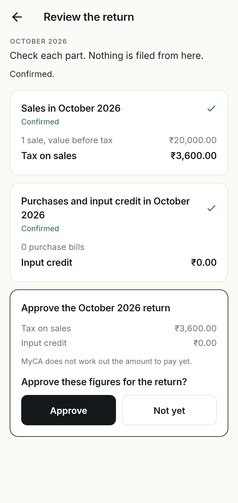
21 — Approve the return
Final gate: both steps confirmed, figures restated (tax on sales, input credit), explicit “MyCA does not work out the amount to pay yet”, Approve / Not yet. Approval records the reviewer; filing stays external with ARN recorded later.
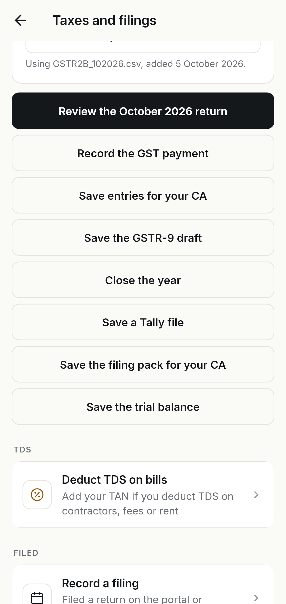
22 — Input credit at risk (GSTR-2B)
Reconciliation surfacing: credit claimed vs supplier-reported, “at risk” amounts per supplier/period. Drives the “chase the supplier before the reversal” action instead of silent ITC loss.
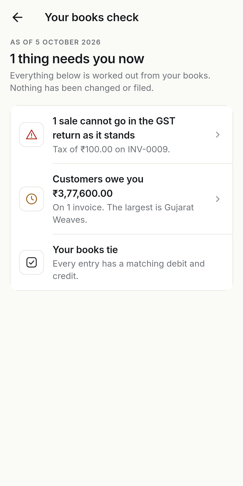
23 — Books check
“What needs you, worked out from your books”: blocking issues (invoice that cannot go in the return), money states (customers owe you), and invariants (“Your books tie — every entry has a matching debit and credit”). Nothing changed or filed from here.
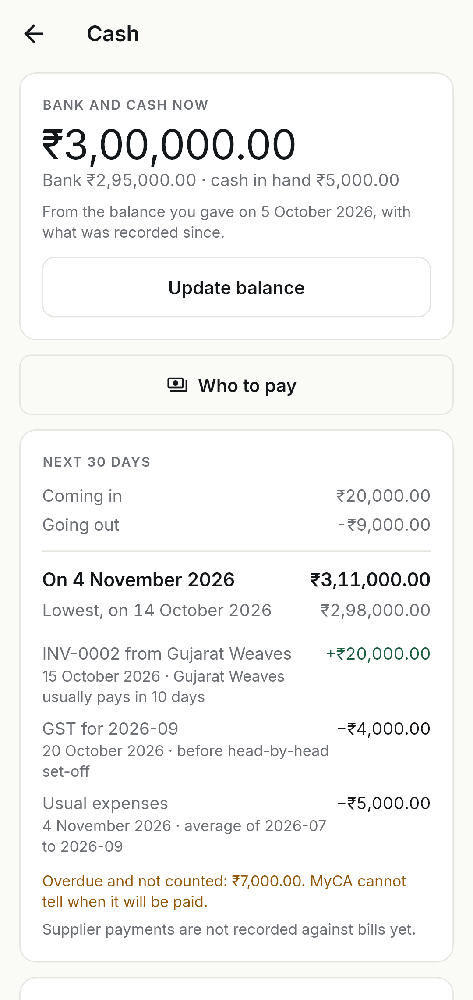
24 — Cash
Treasury view: bank + cash now from the last stated balance plus recorded movement, “Who to pay”, next-30-days projection (coming in, going out, projected and lowest balances with dated drivers), overdue excluded with the reason stated. “Can I afford it” without guessing.
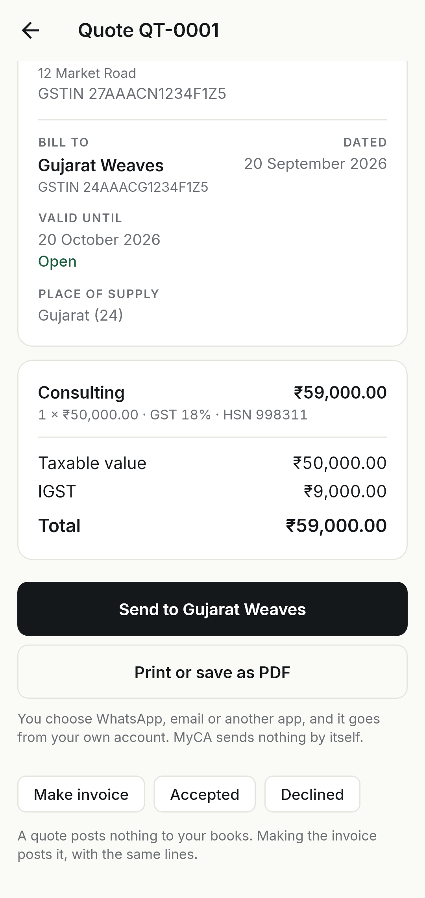
25 — Quote QT-0001
Pre-book document: quoted-to GSTIN, validity, place of supply, line with HSN, tax split, share/PDF like an invoice — but “A quote posts nothing to your books. Making the invoice posts it, with the same lines.” Accept/Decline/Make-invoice are the only exits.